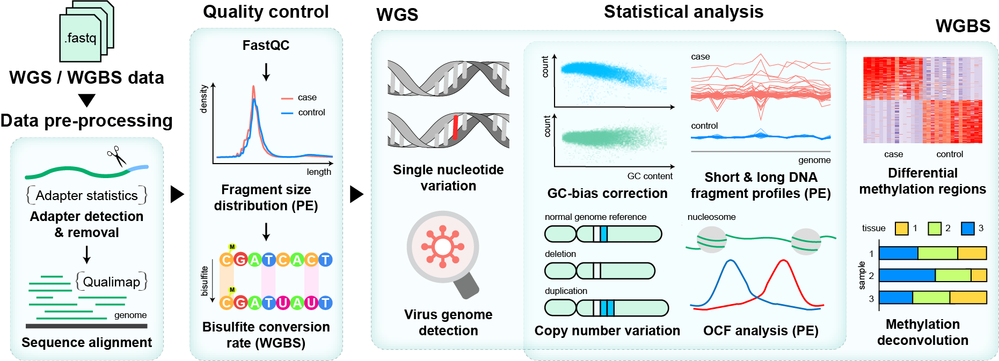

Welcome to cfDNApipe’s documentation!¶
cfDNApipe(cell free DNA Pipeline) is an integrated pipeline for analyzing cell-free DNA WGBS/WGS data. It contains many cfDNA quality control and feature extration algorithms. Also we collected some useful cell free DNA references and provide them here.
The whole pipeline was established based on processing graph principle. Users can use the inside integrated pipeline for WGBS/WGS data as well as build their own analysis pipeline from any intermediate data like bam files. The main functions are as the following picture.

cfDNApipe Functions¶